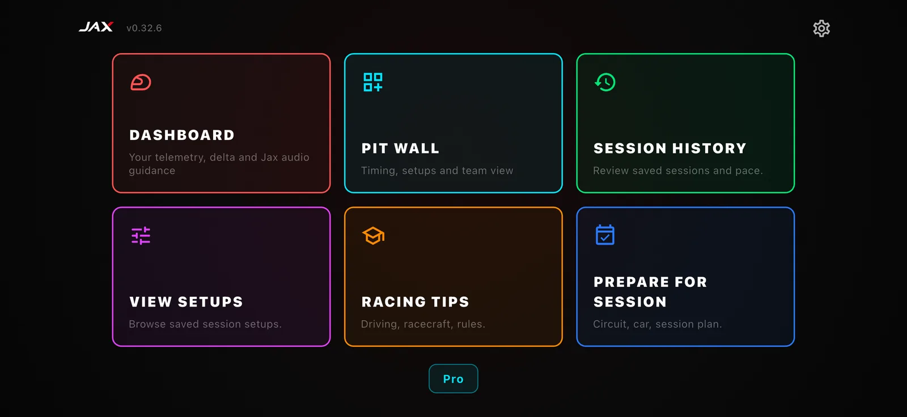
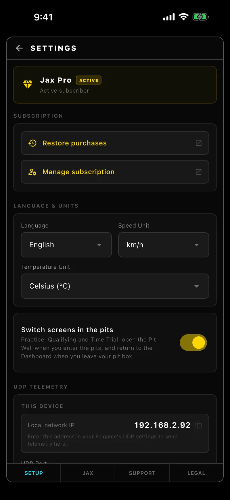
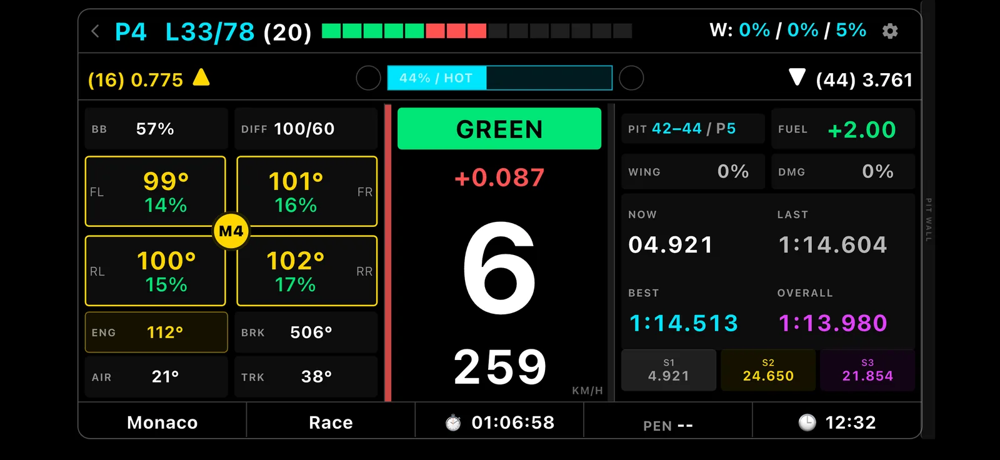
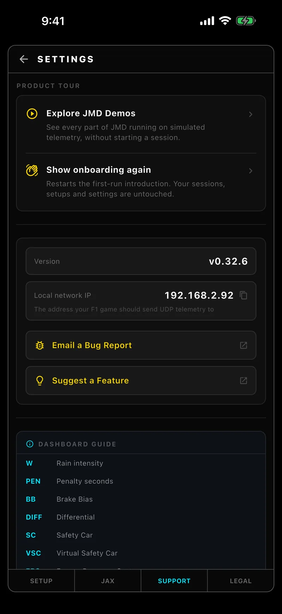

No telemetry received
Check that UDP telemetry is on in your game, the IP address matches the one in JMD Settings → SETUP, the port matches, and both devices are on the same network.
Sim racing companion for iPhone
Set up telemetry once. Then prepare, race and review — with your iPhone on the same network as your console or PC.
How it works
Each guide explains one part of the app: what you see, what to tap, and what is free or part of Jax Pro.
Install JMD on your iPhone. A short first-run tour covers the essentials — you can replay it later from Settings. No account is needed.

JMD receives your game's telemetry over your local network. It's a one-time setup in the game.

Optional, but worth it. Open Prepare for Session from the Home screen, choose the circuit and car, and review the track — or switch to the session view to plan practice, qualifying or the race.
Open the Dashboard, then head out on track. JMD waits for telemetry and connects as soon as your game starts sending it.
Keep your device where you can read it at a glance. The in-app legend explains every abbreviation on the dashboard.

Choose Jax's voice and the categories you want to hear in Settings → JAX. During a session, Quick Jax on the Pit Wall lets you adjust them without leaving the car.

Tap the Pit Wall handle on the dashboard for timing, the live map, your car, traces, setups and session details. Tap back to return to the dashboard.

When a session ends, JMD recognizes it and saves it to Session History. After a race it tells you where you finished, and lets you correct how the race ended if needed. If telemetry stops before the session clearly ended, JMD asks you.
Open Session History from Home to find any saved session. Each review is shaped by the session type: pace for practice and qualifying, the full story for races.

For races and sprint races, open the RACE tab to watch Race Replay: the timing tower, gaps, tyres and race events, lap by lap.
Settings → SETUP holds your Jax Pro status, language and units, the UDP connection, Session Tracking, iCloud Backup (back up now, restore) and how long race data is kept. Settings → SUPPORT has the built-in demos, the first-run tour, your device's IP address, bug reports and the dashboard guide. Settings → LEGAL links to the terms and privacy policy.

Support
Check that UDP telemetry is on in your game, the IP address matches the one in JMD Settings → SETUP, the port matches, and both devices are on the same network.
Make sure your device stayed on Wi-Fi, that Low Power Mode didn't interrupt the app, and that the console didn't switch networks.
Local IP addresses can change between sessions. Recheck Settings → SETUP in JMD and update the game's telemetry settings if needed.
Check device volume and silent mode, then make sure Jax's voice and the relevant categories are enabled in Settings → JAX or Quick Jax.
Race Replay is available for races and sprint races that were captured in enough detail. Practice, qualifying and Time Trial have their own pace-focused review.
Not every game session sends every field. JMD shows missing data as missing rather than guessing.